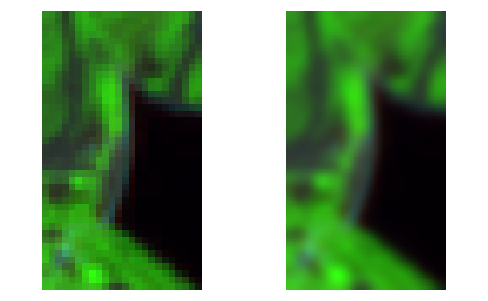
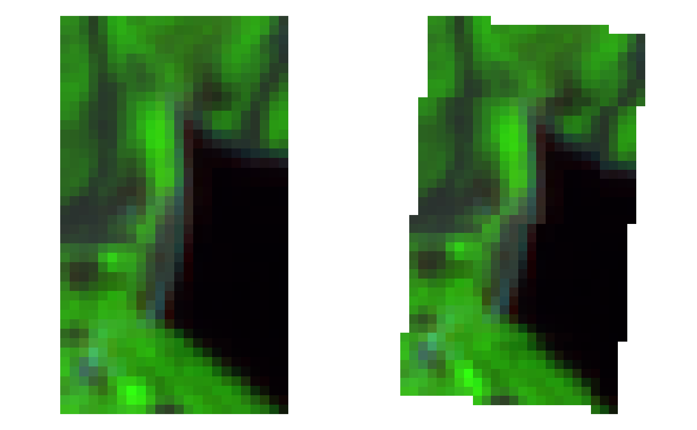
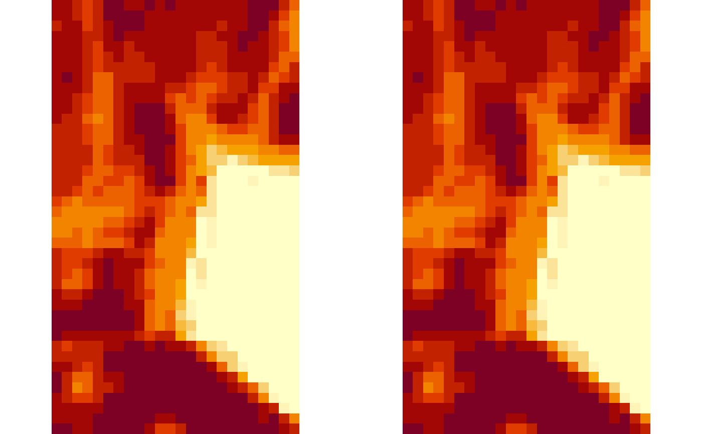

This accessory function interfaces with GDAL
utilities (sen2r must be interfaced with a runtime GDAL
environment, see check_gdal()).
Python-based utilities are always called from a runtime GDAL;
C-based ones are called using sf::gdal_utils().
gdalUtil( util = "info", source, destination = character(0), options = character(0), quiet = FALSE, formula = character(0), processing = character(0), colorfilename = character(0) )
| util | Character: one among |
|---|---|
| source | path of input layer(s); for |
| destination | Path of the output layer. |
| options | Character vector with GDAL options. |
| quiet | Logical: if TRUE, suppress printing of output for info
(this argument is ignored in case package |
| formula | (for |
| processing | Character: processing options for |
| colorfilename | Character: name of colour file for |
A logical (invisible) indicating success (i.e., TRUE); in case of failure, an error is raised and FALSE is returned (in case of Python-based utilities).
License: GPL 3.0
L. Ranghetti, M. Boschetti, F. Nutini, L. Busetto (2020). "sen2r": An R toolbox for automatically downloading and preprocessing Sentinel-2 satellite data. Computers & Geosciences, 139, 104473. DOI: 10.1016/j.cageo.2020.104473, URL: http://sen2r.ranghetti.info/.
Luigi Ranghetti, phD (2020) luigi@ranghetti.info
# Define product names examplename <- system.file( "extdata/out/S2A2A_20190723_022_Barbellino_BOA_10.tif", package = "sen2r" ) # \donttest{ ## gdalinfo out0 <- gdalUtil("info", examplename, quiet = TRUE) message(out0)#> #> #> #> #> #> #> #> #> #> #> #> #> #> #> #> #> #> #> #> #> #> #> #> #> #> #> #> #> #> #> #> #> #> #> #> #> #> #> #> #> #> #> #> #> #> #> #> #> #> #> #> #> #> #> #> #> #> #> #> #> #> #> #> #> #> #> #> #> #> #> #> #> #> #> #> #> #>## gdal_translate outname1 <- tempfile(fileext = ".tif") gdalUtil( "translate", examplename, outname1, options = c("-tr", "2", "2", "-r", "cubicspline", "-co", "COMPRESS=DEFLATE") )#> 0...10...20...30...40...50...60...70...80...90...100 - done.oldpar <- par(mfrow = c(1,2), mar = rep(0,4)) image(stars::read_stars(examplename), rgb = c(11,8,4), useRaster = TRUE) image(stars::read_stars(outname1), rgb = c(11,8,4), useRaster = TRUE)## gdalwarp outname2 <- tempfile(fileext = ".tif") gdalUtil( "warp", examplename, outname2, options = c("-t_srs", "EPSG:32633", "-co", "COMPRESS=DEFLATE") ) oldpar <- par(mfrow = c(1,2), mar = rep(0,4)) image(stars::read_stars(examplename), rgb = c(11,8,4), useRaster = TRUE) image(stars::read_stars(outname2), rgb = c(11,8,4), useRaster = TRUE)## gdal_calc outname3 <- tempfile(fileext = ".tif") ndvirefname <- system.file( "extdata/out/S2A2A_20190723_022_Barbellino_NDVI_10.tif", package = "sen2r" ) gdalUtil( "calc", rep(examplename,2), outname3, formula = "10000*(A.astype(float)-B)/(A+B)", options = c("--A_band", "8", "--B_band", "4", "--type", "Int16") ) oldpar <- par(mfrow = c(1,2), mar = rep(0,4)) image(stars::read_stars(ndvirefname), useRaster = TRUE) image(stars::read_stars(outname3), useRaster = TRUE)# }